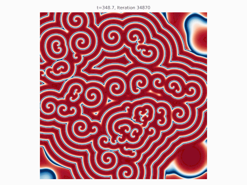

A visit to Jagellonian University in Krakow and Turing Instabilities
November 30, 2025
I was recently visiting Krakow to give a talk at Jagellonian University. This is not my first visit, as I had the pleasure of collaborating with some of the faculty there in the past. This time around, the visit was centered around quantum computing with global control. It was a great experience to interact with the local researchers and students. The city itself is beautiful, with a rich history and vibrant culture, but I was there only for less than two days. I had the chance other times to explore some of the historic sites other times, enjoy the local cuisine, and attend some fascinating lectures. This time I was mostly focused on work, so I didn't get to see much of the city this time around as I was staying near the University. I did however manage to have quite a few interesting discussions with faculty members and students, and in particular Ewa Gudowska-Nowak, who is an expert in complex systems and statistical physics, and Maciej Nowak who is a well-known figure in random matrix theory and its applications to physics. A visitor (whom I am sorry I do not remember the name) was giving a talk on Turing patterns, and did mention that actually Ewa was a student of Prigogine in Brussels (the Nobel prize in Chemistry), and had worked on reaction-diffusion systems in the past. I have to admit that I know quite little about Turing patterns, so I was intrigued to learn more about them. So, that night I found an introduction to the topic by Lappänen and wrote a short derivation summary of the classic Turing instability. I thought it would be useful to share it here as well. There is a nice article on Turing patterns on Wikipedia as well, and also I suggest this paper here. This fits well with other readings I have been doing on pattern formation, such as von Neumann's work on cellular automata.Turing patterns arise in reaction–diffusion systems when a spatially uniform fixed point, stable in the absence of diffusion, becomes unstable once diffusion is introduced. This instability occurs because different diffusion rates modify the linear stability of perturbations in a wavenumber-dependent way.
Reaction–Diffusion Model
We consider two scalar fields:
- $u(x,t)$: concentration of species 1
- $v(x,t)$: concentration of species 2
\[ \partial_t u = f(u,v) + D_u \nabla^2 u,\qquad \partial_t v = g(u,v) + D_v \nabla^2 v. \]
Here $f(u,v)$ and $g(u,v)$ are local reaction terms, and $D_u,D_v\ge 0$ are diffusion coefficients. $\nabla^2$ is the Laplacian, causing spatial smoothing.
Homogeneous Fixed Point
A well-mixed fixed point $(u_*,v_*)$ satisfies
\[ f(u_*,v_*) = 0,\qquad g(u_*,v_*) = 0. \]
If diffusion is ignored, the system reduces to the ODEs $\dot{u}=f(u,v)$, $\dot{v}=g(u,v)$. Stability of this fixed point requires $\mathrm{tr}J<0$ and $\det J>0$, where $J$ is the Jacobian of $(f,g)$ evaluated at $(u_*,v_*)$.
Linearization
Write perturbations $u=u_*+\delta u$, $v=v_*+\delta v$, with $|\delta u|,|\delta v|\ll 1$. Linearizing gives
\[ \partial_t \begin{pmatrix}\delta u \\ \delta v\end{pmatrix} = J\begin{pmatrix}\delta u \\ \delta v\end{pmatrix} + D\nabla^2\begin{pmatrix}\delta u \\ \delta v\end{pmatrix}, \] \[ J= \begin{pmatrix}f_u & f_v \\ g_u & g_v\end{pmatrix}, \qquad D=\begin{pmatrix}D_u & 0 \\ 0 & D_v\end{pmatrix}. \]
Fourier Modes and Dispersion Relation
Use Fourier modes $\delta u,\delta v\propto e^{\sigma t+i\mathbf{k}\cdot\mathbf{x}}$. Because $\nabla^2 e^{i\mathbf{k}\cdot\mathbf{x}}=-k^2 e^{i\mathbf{k}\cdot\mathbf{x}}$, we obtain
\[ \sigma\begin{pmatrix}\hat u\\ \hat v\end{pmatrix} = \bigl(J - k^2 D\bigr)\begin{pmatrix}\hat u\\ \hat v\end{pmatrix}. \]
Thus, for each wavenumber $k$, the growth rates $\sigma(k)$ are the eigenvalues of $J-k^2D$. A Turing instability occurs when the fixed point is stable at $k=0$, but unstable for some $k>0$.
For each wavenumber $k$, the growth rates $\sigma(k)$ satisfy the characteristic equation
\[ \sigma^2 - \tau(k)\sigma + \Delta(k) = 0, \] \[ \tau(k)=\operatorname{tr}J - (D_u + D_v)k^2,\qquad \Delta(k)=\det J - (D_v f_u + D_u g_v)\,k^2 + D_u D_v k^4. \]
Here $\tau(k)$ is the trace and $\Delta(k)$ the determinant of the effective Jacobian $J - k^2 D$. A Fourier mode of wavelength $2\pi/k$ grows when $\Re\,\sigma(k)>0$.
Stability at $k=0$
At zero wavenumber, $\tau(0)=\operatorname{tr}J$ and $\Delta(0)=\det J$. The homogeneous fixed point is stable in the well-mixed limit when
\[ \operatorname{tr}J < 0,\qquad \det J > 0. \]
Instability for Some $k > 0$
Diffusion introduces the $k^2$-dependent modifications to $\tau(k)$ and $\Delta(k)$. Since $\tau(k)$ decreases monotonically with $k^2$, diffusion cannot change its sign. Instability must therefore arise from $\Delta(k)$.
The determinant is a quadratic polynomial in $k^2$:
\[ \Delta(k) = \det J - (D_v f_u + D_u g_v)k^2 + D_u D_v k^4. \]
A Turing instability occurs only if $\Delta(k)$ becomes negative for some $k>0$. For a $2\times 2$ system, this is equivalent to the two conditions:
\[ D_v f_u + D_u g_v > 0,\qquad \left( D_v f_u + D_u g_v \right)^2 > 4 D_u D_v\,\det J. \]
These conditions ensure that the quadratic in $k^2$ has real, positive roots and that $\Delta(k)$ is negative on an interval $(k_-,k_+)$. Equal diffusion coefficients $D_u=D_v$ cannot satisfy these inequalities, so identical diffusion rates cannot generate a Turing instability.
Band of Unstable Modes
The eigenvalues associated with wavenumber $k$ are
\[ \sigma_\pm(k) = \frac{ \tau(k) \pm \sqrt{\tau(k)^2 - 4\Delta(k)} }{2}. \]
Instability requires $\Delta(k)<0$ and a real discriminant. The set of wavenumbers $k\in(k_-,k_+)$ for which $\Re\,\sigma_+(k)>0$ defines the band of unstable modes. The dominant pattern scale corresponds to the $k$ that maximizes $\sigma_+(k)$.
Thus diffusion modifies the linearized dynamics in a $k$-dependent way, and unequal diffusion rates can invert stability at finite wavenumber while preserving stability at $k=0$. This is the defining feature of the Turing mechanism.
Brusselator Example
Now, as mentioned at the beginning, a standard reaction–diffusion system exhibiting a Turing instability is the Brusselator, defined by
\[ f(u,v) = A - (B+1)u + u^2 v, \qquad g(u,v) = Bu - u^2 v, \]
where $A>0$ and $B>0$ are constant feed parameters. The variables $u(x,t)$ and $v(x,t)$ represent the concentrations of two chemical species in an autocatalytic reaction scheme.
The homogeneous fixed point is
\[ u_* = A, \qquad v_* = \frac{B}{A}. \]
Linearization at $(u_*,v_*)$ gives the Jacobian
\[ J = \begin{pmatrix} B-1 & A^2\\ -B & -A^2 \end{pmatrix}. \] \]
In the absence of diffusion, the fixed point is stable when $B < 1 + A^2$, ensuring $\operatorname{tr}J<0$ and $\det J>0$.
Including diffusion,
\[ \partial_t u = f(u,v) + D_u \nabla^2 u, \qquad \partial_t v = g(u,v) + D_v \nabla^2 v, \]
changes the stability of the Fourier modes. A Turing instability arises when $D_v \gg D_u$, so that the determinant
\[ \Delta(k) = \det J - (D_v f_u + D_u g_v)k^2 + D_u D_v k^4 \]
is negative in the interval $k\in(k_-,k_+)$. For the Brusselator, the sign structure of $(f_u,f_v,g_u,g_v)$ matches the activator–inhibitor heuristic: $u$ acts as an activator and $v$ as an inhibitor.
The resulting patterns are spatially inhomogeneous steady states with a characteristic wavelength determined by the maximizer of $\sigma_+(k)$ (see the image below). Nonlinear terms fix the final amplitude but not the selected length scale.
